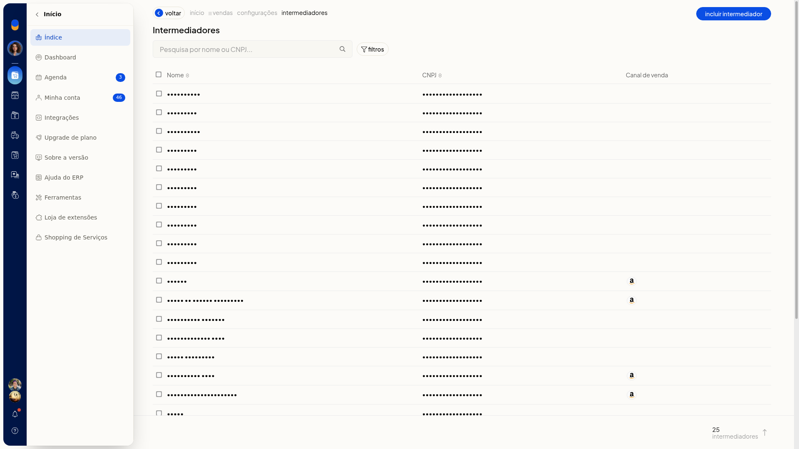
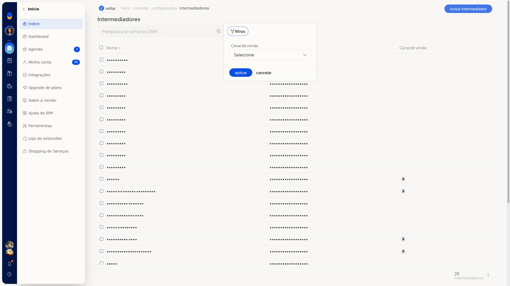
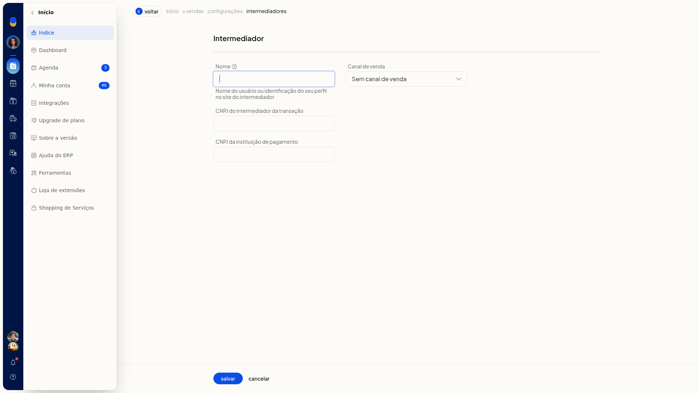
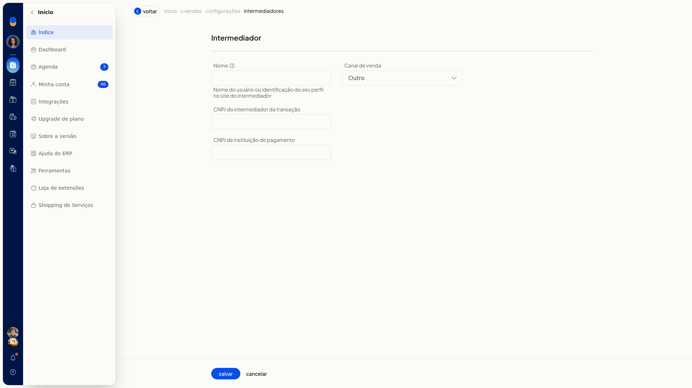
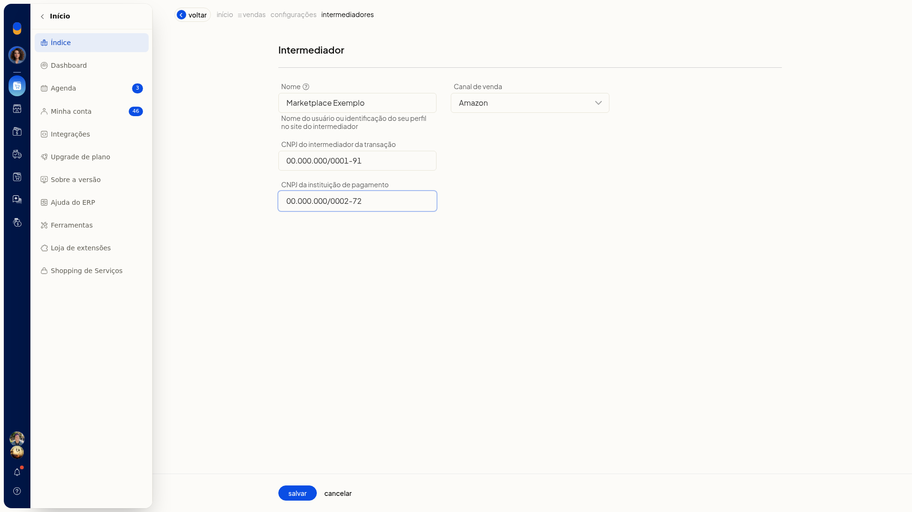

Cadastro de intermediadores
O cadastro de intermediadores no ERP da Olist registra o intermediador de uma venda para as notas fiscais. Você informa a identificação do perfil no site do intermediador, o canal de venda e os CNPJs do intermediador da transação e da instituição de pagamento.
Na mesma tela, você consulta quem já está cadastrado, busca por nome ou CNPJ e filtra a lista pelo canal de venda. O atalho fica em Configurações > Configurações ERP, na aba Notas Fiscais, seção Notas fiscais de venda.
Pré-requisitos
- A nota fiscal eletrônica precisa estar disponível na conta.
- Tenha a identificação do perfil no site do intermediador, o canal de venda e os CNPJs pedidos no formulário.
- Se a opção não aparecer para você, peça acesso ao administrador da conta.
Importante
- Cancelar volta à lista Intermediadores sem gravar o que foi digitado.
- A opção Outro em Canal de venda não abre outro campo.
Instruções
-
No menu lateral do ERP, clique em Configurações.
-
Clique em Configurações ERP.
-
Abra a aba Notas Fiscais.
-
Na seção Notas fiscais de venda, clique em Cadastro de intermediadores.

-
Na lista Intermediadores, confira as colunas Nome, CNPJ e Canal de venda.
-
Para localizar um cadastro, busque por nome ou CNPJ.

-
Para filtrar, clique em filtros.
-
Selecione o Canal de venda. O valor inicial é Selecione.
-
Clique em Aplicar.

-
Clique em Incluir intermediador.

- Preencha Nome com a identificação do perfil no site do intermediador. O campo não é obrigatório.
- Selecione o Canal de venda. O valor inicial do novo cadastro é Sem canal de venda. O campo não é obrigatório.
- Se escolher Outro, continue nos campos já exibidos. Nenhum campo extra aparece.

- Preencha CNPJ do intermediador da transação. O campo não é obrigatório.
- Preencha CNPJ da instituição de pagamento. O campo não é obrigatório.

- Clique em Salvar para concluir o cadastro. Para sair sem gravar, clique em Cancelar.
Informações adicionais
Endereço e município dependem do SPED Fiscal
Endereço e município do intermediador e da instituição de pagamento só aparecem se a empresa tiver o SPED Fiscal.